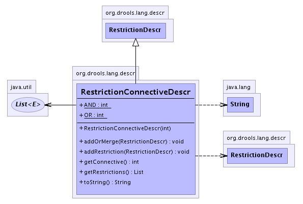

org.drools.lang.descr
Class RestrictionConnectiveDescr
java.lang.Object
 org.drools.lang.descr.BaseDescr
org.drools.lang.descr.RestrictionDescr
org.drools.lang.descr.RestrictionConnectiveDescr
org.drools.lang.descr.BaseDescr
org.drools.lang.descr.RestrictionDescr
org.drools.lang.descr.RestrictionConnectiveDescr
- All Implemented Interfaces:
- java.io.Serializable
public class RestrictionConnectiveDescr
- extends RestrictionDescr
This is used to connect restrictions together for a single field
eg:
age < 40 & > 30
- See Also:
- Serialized Form
-
- 
|
Field Summary |
static int |
AND
|
static int |
OR
|
| Methods inherited from class org.drools.lang.descr.BaseDescr |
getColumn, getEndCharacter, getEndColumn, getEndLine, getLine, getStartCharacter, getText, setEndCharacter, setEndLocation, setLocation, setStartCharacter, setText |
| Methods inherited from class java.lang.Object |
clone, equals, finalize, getClass, hashCode, notify, notifyAll, wait, wait, wait |
AND
public static final int AND
- See Also:
- Constant Field Values
OR
public static final int OR
- See Also:
- Constant Field Values
RestrictionConnectiveDescr
public RestrictionConnectiveDescr(int connective)
getConnective
public int getConnective()
addRestriction
public void addRestriction(RestrictionDescr restriction)
addOrMerge
public void addOrMerge(RestrictionDescr restriction)
getRestrictions
public java.util.List getRestrictions()
toString
public java.lang.String toString()
- Overrides:
toString in class java.lang.Object